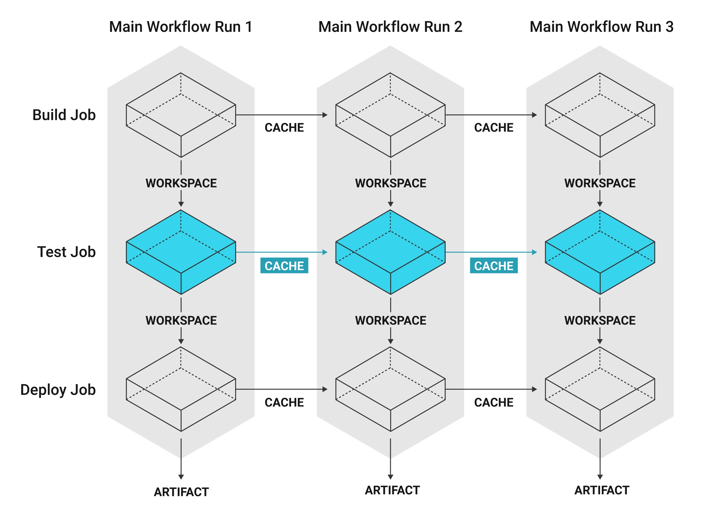
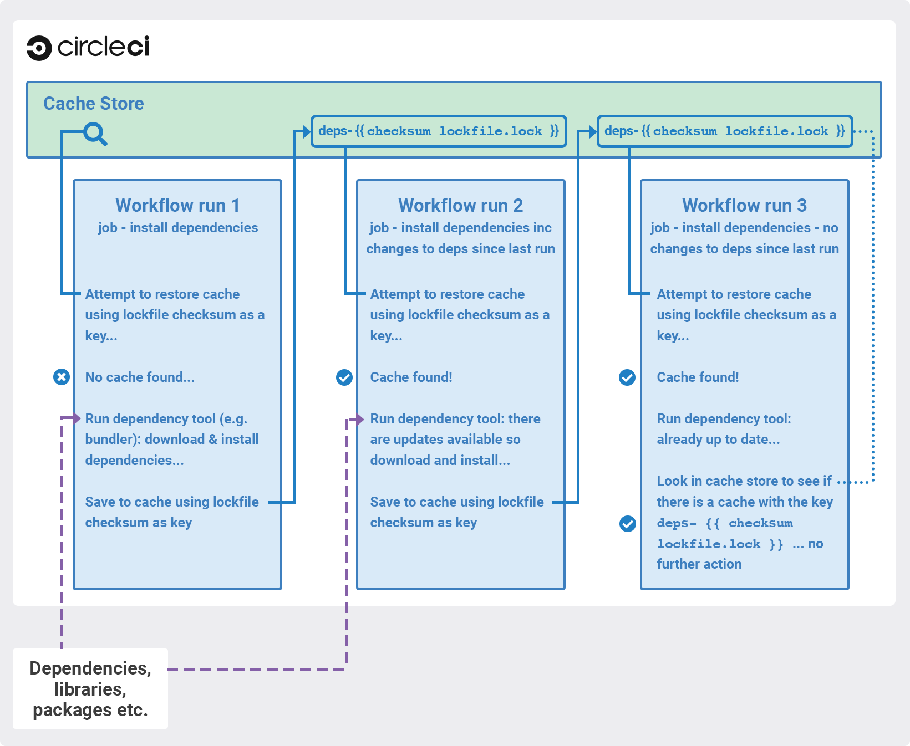

Caching Dependencies
Caching is one of the most effective ways to make jobs faster on CircleCI by reusing the data from expensive fetch operations from previous jobs.
- Caching Libraries
- Writing to the Cache in Workflows
- Restoring Cache
- Managing Caches
- Basic Example of Dependency Caching
- Using Keys and Templates
- Caching Strategy Tradeoffs
- Source Caching
After an initial job run, future instances of the job will run faster by not redoing work.

Caching is particularly useful with package dependency managers such as Yarn, Bundler, or Pip. With dependencies restored from a cache, commands like yarn install will only need to download new dependencies, if any, and not redownload everything on every build.
Example Caching Configuration
Caching keys are simple to configure. The following example updates a cache if it changes by using a checksum of pom.xml with a cascading fallback:
steps:
- restore_cache:
keys:
- m2-{{ checksum "pom.xml" }}
- m2- # used if checksum fails
Introduction
Automatic dependency caching is not available in CircleCI 2.0, so it is important to plan and implement your caching strategy to get the best performance. Manual configuration in 2.0 enables more advanced strategies and finer control.
This document describes the manual caching available, the costs and benefits of a chosen strategy, and tips for avoiding problems with caching. Note: The Docker images used for CircleCI 2.0 job runs are automatically cached on the server infrastructure where possible.
For information about enabling a premium feature to reuse the unchanged layers of your Docker image, see the Enabling Docker Layer Caching document.
Overview
A cache stores a hierarchy of files under a key. Use the cache to store data that makes your job faster, but in the case of a cache miss or zero cache restore the job will still run successfully. For example, you might cache NPM package directories (known as node_modules); the first time your job runs it will download all your dependencies, cache them, and—provided your cache is valid—the cache will be used to speed up your job the next time it is run.
Caching is a balance between reliability (not using an out-of-date or inappropriate cache) and getting maximum performance (using a full cache for every build).
In general it is safer to preserve reliability than to risk a corrupted build or to build using stale dependencies very quickly. So, the ideal is to balance performance gains while maintaining high reliability.
Caching Libraries
The dependencies that are most important to cache during a job are the libraries on which your project depends. For example, cache the libraries that are installed with pip in Python or npm for Node.js. The various language dependency managers, for example npm or pip, each have their own paths where dependencies are installed. See our Language guides and demo projects for the specifics for your stack.
Tools that are not explicitly required for your project are best stored on the Docker image. The Docker image(s) pre-built by CircleCI have tools preinstalled that are generic for building projects using the language the image is focused on. For example the circleci/ruby:2.4.1 image has useful tools like git, openssh-client, and gzip preinstalled.

Writing to the Cache in Workflows
Jobs in one workflow can share caches. Note that this makes it possible to create race conditions in caching across different jobs in workflows.
Cache is immutable on write: once a cache is written for a particular key like node-cache-master, it cannot be written to again. Consider a workflow of 3 jobs, where Job3 depends on Job1 and Job2: {Job1, Job2} -> Job3. They all read and write to the same cache key.
In a run of the workflow, Job3 may use the cache written by Job1 or Job2. Since caches are immutable, this would be whichever job saved its cache first. This is usually undesireable because the results aren’t deterministic–part of the result depends on chance. You could make this workflow deterministic by changing the job dependencies: make Job1 and Job2 write to different caches and Job3 loads from only one, or ensure there can be only one ordering: Job1 -> Job2 ->Job3.
There are more complex cases, where jobs can save using a dynamic key like node-cache-{{ checksum "package-lock.json" }} and restore using a partial key match like node-cache-. The possibility for a race condition still exists, but the details may change. For instance, the downstream job uses the cache from the upstream job to run last.
Another race condition is possible when sharing caches between jobs. Consider a workflow with no dependency links: Job1 and Job2. Job2 uses the cache saved from Job1. Job2 could sometimes successfully restore a cache, and sometimes report no cache is found, even when Job1 reports saving it. Job2 could also load a cache from a previous workflow. If this happens, this means Job2 tried to load the cache before Job1 saved it. This can be resolved by creating a workflow dependency: Job1 -> Job2. This would force Job2 to wait until Job1 has finished running.
Restoring Cache
CircleCI restores caches in the order of keys listed in the restore_cache step. Each cache key is namespaced to the project, and retrieval is prefix-matched. The cache will be restored from the first matching key. If there are multiple matches, the most recently generated cache will be used.
In the example below, two keys are provided:
steps:
- restore_cache:
keys:
# Find a cache corresponding to this specific package-lock.json checksum
# when this file is changed, this key will fail
- v1-npm-deps-{{ checksum "package-lock.json" }}
# Find the most recently generated cache used from any branch
- v1-npm-deps-
Because the second key is less specific than the first, it is more likely that there will be differences between the current state and the most recently generated cache. When a dependency tool runs, it would discover outdated dependencies and update them. This is referred to as a partial cache restore.
Let’s walk through how the above cache keys are used in more detail:
Each line in the keys: list all manage one cache (each line does not correspond to its own cache). The list of keys (v1-npm-deps-{{ checksum "package-lock.json" }} and v1-npm-deps-), in this example, represent a single cache. When it comes time to restore the cache, CircleCI first validates the cache based on the first (and most specific) key, and then steps through the other keys looking for any other cache-key changes.
Here, the first key concatenates the checksum of package-lock.json file into the string v1-npm-deps-; if this file was to change in your commit, CircleCI would see a new cache-key.
The next key does not have a dynamic component to it, it simply is a static string: v1-npm-deps-. If you would like to invalidate your cache manually, you can bump v1 to v2 in your config.yml file. In this case, you would now have a new cache key v2-npm-deps, which will trigger the storing of a new cache.
Using Caching in Monorepos
There are many different approaches to utilizing caching in monorepos. This type of approach can be used whenever you need to managed a shared cache based on multiple files in different parts of your monorepo.
Creating and Building a Concatenated package-lock file
1) Add custom command to config:
commands:
create_concatenated_package_lock:
description: "Concatenate all package-lock.json files recognized by lerna.js into single file. File is used as checksum source for part of caching key."
parameters:
filename:
type: string
steps:
- run:
name: Combine package-lock.json files to single file
command: npx lerna list -p -a | awk -F packages '{printf "\"packages%s/package-lock.json\" ", $2}' | xargs cat > << parameters.filename >>
2) Use custom command in build to generate the concatenated package-lock file
steps:
- checkout
- create_concatenated_package_lock:
filename: combined-package-lock.txt
## Use combined-package-lock.text in cache key
- restore_cache:
keys:
- v3-deps-{{ checksum "package-lock.json" }}-{{ checksum "combined-package-lock.txt" }}
- v3-deps
Managing Caches
Cache Expiration
Caches created via the save_cache step are stored for up to 15 days.
Clearing Cache
If you need to get clean caches when your language or dependency management tool versions change, use a naming strategy similar to the previous example and then change the cache key names in your config.yml file and commit the change to clear the cache.
v1-.... This enables you to regenerate all of your caches by incrementing the version in this prefix.
For example, you may want to clear the cache in the following scenarios by incrementing the cache key name:
- Dependency manager version change, for example, you change npm from 4 to 5
- Language version change, for example, you change ruby 2.3 to 2.4
- Dependencies are removed from your project
:, ?, &, =, /, #), as they may cause issues with your build. Generally,
consider using keys within [a-z][A-Z] in your cache key prefix.
Cache Size
We recommend keeping cache sizes under 500MB. This is our upper limit for corruption checks because above this limit check times would be excessively long. You can view the cache size from the CircleCI Jobs page within the restore_cache step.
Larger cache sizes are allowed but may cause problems due to a higher chance of decompression issues and corruption during download.
To keep cache sizes down, consider splitting into multiple distinct caches.
Basic Example of Dependency Caching
The extra control and power in CircleCI 2.0 manual dependency caching requires that you be explicit about what you cache and how you cache it. See the save cache section of the Configuring CircleCI document for additional examples.
To save a cache of a file or directory, add the save_cache step to a job in your .circleci/config.yml file:
steps:
- save_cache:
key: my-cache
paths:
- my-file.txt
- my-project/my-dependencies-directory
The path for directories is relative to the working_directory of your job. You can specify an absolute path if you choose.
Note:
Unlike the special step persist_to_workspace,
neither save_cache nor restore_cache support globbing for the paths key.
Using Keys and Templates
A cache-key is a user-defined string that corresponds to a data cache. A cache-key can be created by interpolating dynamic values — these are called templates. Anything you see in a cache-key between curly braces is a template. Consider the following example:
myapp-{{ checksum "package-lock.json" }}
The above example will output a unique string to represent this key. Here, the example is using a checksum to create a unique string that represents the contents of a package-lock.json file.
The example may output a string that looks like the following:
myapp-+KlBebDceJh_zOWQIAJDLEkdkKoeldAldkaKiallQ<etc>
If the contents of the package-lock file were to change, the checksum function would return a different, unique string, indicating the need to invalidate the cache.
While choosing suitable templates for your cache key, keep in mind that cache saving is not a free operation, it will take some time to upload the cache to CircleCI storage. To avoid generating a new cache every build, have a key that generates a new cache only if something actually changes.
The first step is to decide when a cache will be saved or restored by using a key for which some value is an explicit aspect of your project. For example, when a build number increments, when a revision is incremented, or when the hash of a dependency manifest file changes.
Following are some examples of caching strategies for different goals:
-
myapp-{{ checksum "package-lock.json" }}- Cache will be regenerated every time something is changed inpackage-lock.jsonfile, different branches of this project will generate the same cache key. -
myapp-{{ .Branch }}-{{ checksum "package-lock.json" }}- Cache will be regenerated every time something is changed inpackage-lock.jsonfile, different branches of this project will generate separate cache keys. -
myapp-{{ epoch }}- Every build will generate separate cache keys.
During step execution, the templates above will be replaced by runtime values and use the resultant string as the key. The following table describes the available cache key templates:
| Template | Description |
|---|---|
{{ checksum "filename" }} |
A base64 encoded SHA256 hash of the given filename’s contents, so that a new cache key is generated if the file changes. This should be a file committed in your repo. Consider using dependency manifests, such as package-lock.json, pom.xml or project.clj. The important factor is that the file does not change between restore_cache and save_cache, otherwise the cache will be saved under a cache key that is different from the file used at restore_cache time. |
{{ .Branch }} |
The VCS branch currently being built. |
{{ .BuildNum }} |
The CircleCI job number for this build. |
{{ .Revision }} |
The VCS revision currently being built. |
{{ .Environment.variableName }} |
The environment variable variableName (supports any environment variable exported by CircleCI or added to a specific Context—not any arbitrary environment variable). |
{{ epoch }} |
The number of seconds that have elapsed since 00:00:00 Coordinated Universal Time (UTC), also known as POSIX or Unix epoch. This cache key is a good option if you need to ensure a new cache is always stored for each run. |
{{ arch }} |
Captures OS and CPU (architecture, family, model) information. Useful when caching compiled binaries that depend on OS and CPU architecture, for example, darwin-amd64-6_58 versus linux-amd64-6_62. See supported CPU architectures. |
Further Notes on Using Keys and Templates
- When defining a unique identifier for the cache, be careful about overusing template keys that are highly specific such as
{{ epoch }}. If you use less specific template keys such as{{ .Branch }}or{{ checksum "filename" }}, you’ll increase the odds of the cache being used. - Cache variables can also accept parameters if your build makes use of them — for example:
v1-deps-<< parameters.varname >>. - You do not have to use dynamic templates for your cache-key. You can use a static string, and “bump” (change) its name to force a cache invalidation.
Full Example of Saving and Restoring Cache
The following example demonstrates how to use restore_cache and save_cache together with templates and keys in your .circleci/config.yml file.
docker:
- image: customimage/ruby:2.3-node-phantomjs-0.0.1
environment:
RAILS_ENV: test
RACK_ENV: test
- image: circleci/mysql:5.6
steps:
- checkout
- run: cp config/{database_circleci,database}.yml
# Run bundler
# Load installed gems from cache if possible, bundle install then save cache
# Multiple caches are used to increase the chance of a cache hit
- restore_cache:
keys:
- gem-cache-v1-{{ arch }}-{{ .Branch }}-{{ checksum "Gemfile.lock" }}
- gem-cache-v1-{{ arch }}-{{ .Branch }}
- gem-cache-v1
- run: bundle install --path vendor/bundle
- save_cache:
key: gem-cache-v1-{{ arch }}-{{ .Branch }}-{{ checksum "Gemfile.lock" }}
paths:
- vendor/bundle
- run: bundle exec rubocop
- run: bundle exec rake db:create db:schema:load --trace
- run: bundle exec rake factory_girl:lint
# Precompile assets
# Load assets from cache if possible, precompile assets then save cache
# Multiple caches are used to increase the chance of a cache hit
- restore_cache:
keys:
- asset-cache-v1-{{ arch }}-{{ .Branch }}-{{ .Environment.CIRCLE_SHA1 }}
- asset-cache-v1-{{ arch }}-{{ .Branch }}
- asset-cache-v1
- run: bundle exec rake assets:precompile
- save_cache:
key: asset-cache-v1-{{ arch }}-{{ .Branch }}-{{ .Environment.CIRCLE_SHA1 }}
paths:
- public/assets
- tmp/cache/assets/sprockets
- run: bundle exec rspec
- run: bundle exec cucumber
Partial Dependency Caching Strategies
Some dependency managers do not properly handle installing on top of partially restored dependency trees.
steps:
- restore_cache:
keys:
- gem-cache-{{ arch }}-{{ .Branch }}-{{ checksum "Gemfile.lock" }}
- gem-cache-{{ arch }}-{{ .Branch }}
- gem-cache
In the above example, if a dependency tree is partially restored by the second or third cache keys, some dependency managers will incorrectly install on top of the outdated dependency tree.
Instead of a cascading fallback, a more stable option is a single version-prefixed cache key.
steps:
- restore_cache:
keys:
- v1-gem-cache-{{ arch }}-{{ .Branch }}-{{ checksum "Gemfile.lock" }}
Since caches are immutable, this strategy allows you to regenerate all of your caches by incrementing the version. This is useful in the following scenarios:
- When you change the version of a dependency manager like
npm. - When you change the version of a language like Ruby.
- When you add or remove dependencies from your project.
The stability of partial dependency caching is dependent on your dependency manager. Below is a list of common dependency managers, recommended partial caching strategies, and associated justifications.
Bundler (Ruby)
Safe to Use Partial Cache Restoration? Yes (with caution).
Since Bundler uses system gems that are not explicitly specified, it is non-deterministic, and partial cache restoration can be unreliable.
To prevent this behavior, add a step that cleans Bundler before restoring dependencies from cache.
steps:
- restore_cache:
keys:
# when lock file changes, use increasingly general patterns to restore cache
- v1-gem-cache-{{ arch }}-{{ .Branch }}-{{ checksum "Gemfile.lock" }}
- v1-gem-cache-{{ arch }}-{{ .Branch }}-
- v1-gem-cache-{{ arch }}-
- run: bundle install && bundle clean
- save_cache:
paths:
- ~/.bundle
key: v1-gem-cache-{{ arch }}-{{ .Branch }}-{{ checksum "Gemfile.lock" }}
Gradle (Java)
Safe to Use Partial Cache Restoration? Yes.
Gradle repositories are intended to be centralized, shared, and massive. Partial caches can be restored without impacting which libraries are actually added to classpaths of generated artifacts.
steps:
- restore_cache:
keys:
# when lock file changes, use increasingly general patterns to restore cache
- gradle-repo-v1-{{ .Branch }}-{{ checksum "dependencies.lockfile" }}
- gradle-repo-v1-{{ .Branch }}-
- gradle-repo-v1-
- save_cache:
paths:
- ~/.gradle
key: gradle-repo-v1-{{ .Branch }}-{{ checksum "dependencies.lockfile" }}
Maven (Java) and Leiningen (Clojure)
Safe to Use Partial Cache Restoration? Yes.
Maven repositories are intended to be centralized, shared, and massive. Partial caches can be restored without impacting which libraries are actually added to classpaths of generated artifacts.
Since Leiningen uses Maven under the hood, it has equivalent behavior.
steps:
- restore_cache:
keys:
# when lock file changes, use increasingly general patterns to restore cache
- maven-repo-v1-{{ .Branch }}-{{ checksum "pom.xml" }}
- maven-repo-v1-{{ .Branch }}-
- maven-repo-v1-
- save_cache:
paths:
- ~/.m2
key: maven-repo-v1-{{ .Branch }}-{{ checksum "pom.xml" }}
npm (Node)
Safe to Use Partial Cache Restoration? Yes (with NPM5+).
With NPM5+ and a lock file, you can safely use partial cache restoration.
steps:
- restore_cache:
keys:
# when lock file changes, use increasingly general patterns to restore cache
- node-v1-{{ .Branch }}-{{ checksum "package-lock.json" }}
- node-v1-{{ .Branch }}-
- node-v1-
- save_cache:
paths:
- ~/usr/local/lib/node_modules # location depends on npm version
key: node-v1-{{ .Branch }}-{{ checksum "package-lock.json" }}
pip (Python)
Safe to Use Partial Cache Restoration? Yes (with Pipenv).
Pip can use files that are not explicitly specified in requirements.txt. Using Pipenv will include explicit versioning in a lock file.
steps:
- restore_cache:
keys:
# when lock file changes, use increasingly general patterns to restore cache
- pip-packages-v1-{{ .Branch }}-{{ checksum "Pipfile.lock" }}
- pip-packages-v1-{{ .Branch }}-
- pip-packages-v1-
- save_cache:
paths:
- ~/.local/share/virtualenvs/venv # this path depends on where pipenv creates a virtualenv
key: pip-packages-v1-{{ .Branch }}-{{ checksum "Pipfile.lock" }}
Yarn (Node)
Safe to Use Partial Cache Restoration? Yes.
Yarn has always used a lock file for exactly these reasons.
steps:
- restore_cache:
keys:
# when lock file changes, use increasingly general patterns to restore cache
- yarn-packages-v1-{{ .Branch }}-{{ checksum "yarn.lock" }}
- yarn-packages-v1-{{ .Branch }}-
- yarn-packages-v1-
- save_cache:
paths:
- ~/.cache/yarn
key: yarn-packages-v1-{{ .Branch }}-{{ checksum "yarn.lock" }}
We recommend using yarn --frozen-lockfile --cache-folder ~/.cache/yarn for two reasons.
1) --frozen-lockfile ensures that a whole new lockfile is created and it also ensures your lockfile isn’t altered. This allows for the checksum to stay relevant and your dependencies should identically match what you use in development.
2) The default cache location depends on OS. --cache-folder ~.cache/yarn ensures we’re explitly matching our cache save location.
Caching Strategy Tradeoffs
In cases where the build tools for your language include elegant handling of dependencies, partial cache restores may be preferable to zero cache restores for performance reasons. If you get a zero cache restore, you have to reinstall all of your dependencies, which can result in reduced performance. One alternative is to get a large percentage of your dependencies from an older cache instead of starting from zero.
However, for other types of languages, partial caches carry the risk of creating code dependencies that are not aligned with your declared dependencies and do not break until you run a build without a cache. If the dependencies change infrequently, consider listing the zero cache restore key first.
Then, track the costs over time. If the performance costs of zero cache restores (also referred to as a cache miss) prove to be significant over time, only then consider adding a partial cache restore key.
Listing multiple keys for restoring a cache increases the odds of a partial cache hit. However, broadening your restore_cache scope to a wider history increases the risk of confusing failures. For example, if you have dependencies for Node v6 on an upgrade branch, but your other branches are still on Node v5, a restore_cache step that searches other branches might restore incompatible dependencies.
Using a Lock File
Language dependency manager lockfiles (for example, Gemfile.lock or yarn.lock) checksums may be a useful cache key.
An alternative is to do ls -laR your-deps-dir > deps_checksum and reference it with {{ checksum "deps_checksum" }}. For example, in Python, to get a more specific cache than the checksum of your requirements.txt file you could install the dependencies within a virtualenv in the project root venv and then do ls -laR venv > python_deps_checksum.
Using Multiple Caches For Different Language
It is also possible to lower the cost of a cache miss by splitting your job across multiple caches. By specifying multiple restore_cache steps with different keys, each cache is reduced in size thereby reducing the performance impact of a cache miss. Consider splitting caches by language type (npm, pip, or bundler) if you know how each dependency manager stores its files, how it upgrades, and how it checks dependencies.
Caching Expensive Steps
Certain languages and frameworks have more expensive steps that can and should be cached. Scala and Elixir are two examples where caching the compilation steps will be especially effective. Rails developers, too, would notice a performance boost from caching frontend assets.
Do not cache everything, but do consider caching for costly steps like compilation.
Source Caching
As in CircleCI 1.0, it is possible and oftentimes beneficial to cache your git repository, thus saving time in your checkout step—especially for larger projects. Here is an example of source caching:
steps:
- restore_cache:
keys:
- source-v1-{{ .Branch }}-{{ .Revision }}
- source-v1-{{ .Branch }}-
- source-v1-
- checkout
- save_cache:
key: source-v1-{{ .Branch }}-{{ .Revision }}
paths:
- ".git"
In this example, restore_cache looks for a cache hit from the current git revision, then for a hit from the current branch, and finally for any cache hit, regardless of branch or revision. When CircleCI encounters a list of keys, the cache will be restored from the first match. If there are multiple matches, the most recently generated cache will be used.
If your source code changes frequently, we recommend using fewer, more specific keys. This produces a more granular source cache that will update more often as the current branch and git revision change.
Even with the narrowest restore_cache option (source-v1-{{ .Branch }}-{{ .Revision }}), source caching can be greatly beneficial when, for example, running repeated builds against the same git revision (i.e., with API-triggered builds) or when using Workflows, where you might otherwise need to checkout the same repository once per Workflows job.
That said, it’s worth comparing build times with and without source caching; git clone is often faster than restore_cache.
NOTE: The built-in checkout command disables git’s automatic garbage collection. You might choose to manually run git gc in a run step prior to running save_cache to reduce the size of the saved cache.